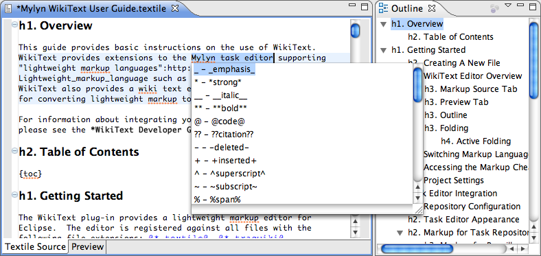
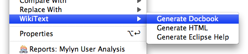
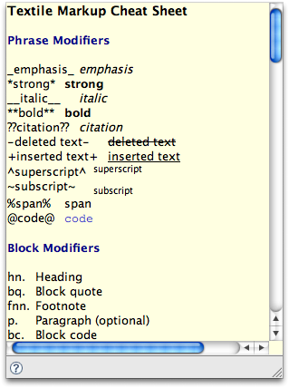
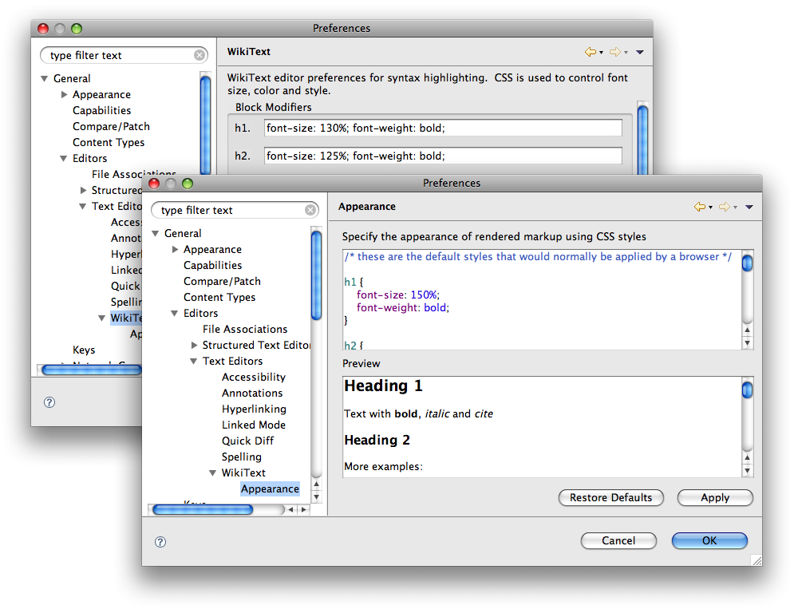

New in Mylyn 3.1
WikiText
WikiText provides parsers and editors for managing lightweight markup (wiki text). WikiText integrates with the Mylyn task editor and provides components that may be used within Eclipse or stand-alone.
| Markup Editor |
WikiText provides an integrated source editor for authoring files containing wiki markup. The editor provides content assist, validation, folding, source formatting, an integrated preview, structured outline and a markup cheat-sheet. The WikiText editor is aware of 5 markup languages and is capable of supporting others via the common WikiText parsing framework. The following markup languages are currently recognized.
|
|---|---|
| Markup Conversion |
WikiText can convert lightweight markup to other formats including Eclipse Help, HTML, DocBook and DITA. Conversion may be performed within Eclipse or from Ant. The conversion framework is extensible and can support alternative output formats by extending a simple Document Builder API. |
| Content Assist |
Using markup is easy with WikiText in part due to content assist in the editor. Suggestions are provided in the editor when CTRL+Space is pressed, making it easy to insert bold, italics, bulleted lists, headings and other markup. 
|
| Cheat Sheet |
If you forget markup syntax, pressing F1 in the editor will bring up a cheat sheet with tips for the markup being used.  |
| Preferences |
The appearance of the source editor and preview can be altered easily with workspace preferences. CSS is used to specify exactly how you would like for the markup to appear. This gives you ultimate control over the appearance of the editor, preview and the Mylyn task editor.  |